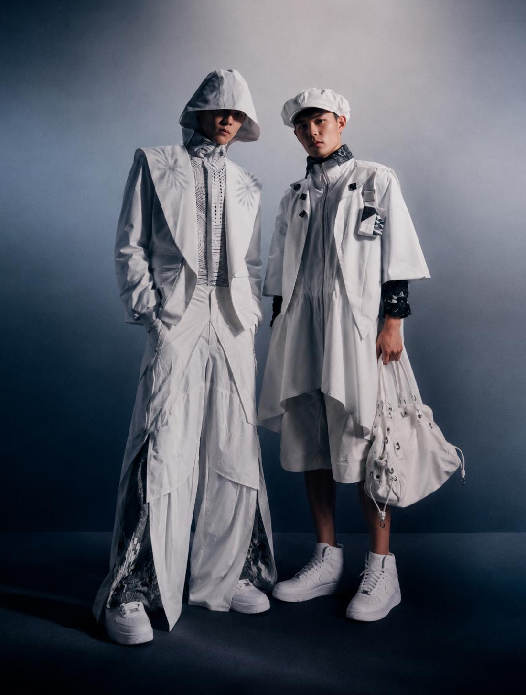
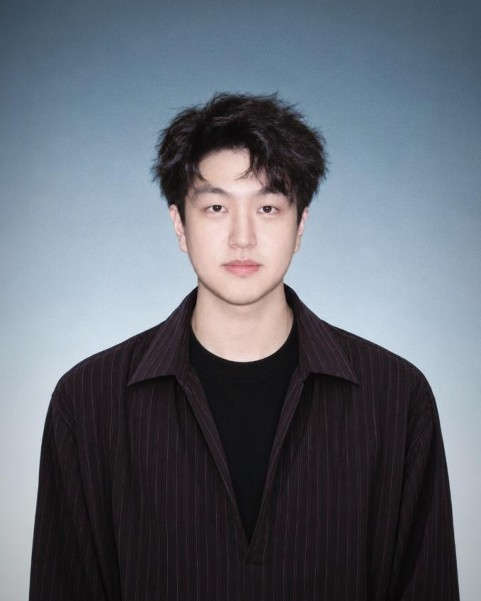

PAN
TAIXU潘泰旭
从概念、打版到成衣。
以廓形、面料与手工制作展开服装设计。
From concept and pattern to finished garment.
Exploring fashion through silhouette, textiles and making.

精选作品Selected Work
01 — 04关于我About
DESIGN & MAKING
潘泰旭 / Pan Taixu
大连工业大学服装与服饰设计专业本科在读。拥有2年缝纫经验，可独立完成日常款与设计款服装的设计、打版与缝制。
An undergraduate in Fashion and Apparel Design at Dalian Polytechnic University. With two years of sewing experience, able to independently design, pattern-cut and sew everyday garments and creative fashion pieces.
教育经历 / EDUCATION
大连工业大学 · 服装与服饰设计本科
Dalian Polytechnic University · Undergraduate, Fashion and Apparel Design
2023.09 — 2027.06
设计工具 / TOOLKIT
荣誉经历 / AWARDS
大连新锐女装设计大赛 · 银奖
Silver Award · Dalian Emerging Womenswear Design Competition
紫艺奖 · 第二届中国国际大学生艺术设计大赛
东北赛区 · 三等奖
Third Prize, Northeast Division · Ziyi Award, 2nd China International University Student Art & Design Competition
主修课程 / SELECTED COURSES
创新概念设计 / Innovative Concept Design
时尚创意设计 / Creative Fashion Design
立体裁剪 I / II · Draping I / II
Let’s work
together.
让想法成为下一件作品。